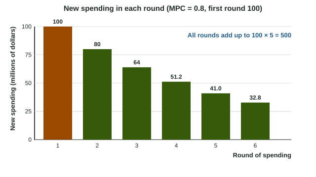

Multipliers
Each new dollar of spending becomes someone's income, who spends the MPC share of it, so output rises by a multiple of the first change.
Part 1 · Hook
Why this matters
Part 2 · Before you start
What this builds on
Part 3 · Prerequisite check
Quick check before you start
1. Which component of GDP is household spending on goods and services?
- Consumption
- Investment
- Government spending
- Net exports
Show the answer
Consumption (C) is household spending on goods and services.
- Correct: Consumption:
- Investment:
- Government spending:
- Net exports:
2. What shifts the aggregate demand curve to the right?
- A rise in spending at every price level
- A fall in the price level
- A rise in the price level
- A fall in government spending
Show the answer
More spending at every price level shifts AD right; a change in the price level moves along it.
- Correct: A rise in spending at every price level:
- A fall in the price level:
- A rise in the price level:
- A fall in government spending:
Part 4 · See it
See it first

Part 5 · Step by step
How it works, step by step
- Government spending rises by 100incomes of workers and firms rise by 100
- Incomes rise by 100 and the MPC is 0.8households spend 80 more, which is income for others
- Each round is 0.8 times the lasttotal spending rises by 100 × 1 / 0.2 = 500
- A tax cut of 100 insteadhouseholds spend only 80 at first, so output rises by 400
Part 6 · Key ideas
Key ideas
- MPC and MPS , where DI is disposable income (income after taxes). MPC + MPS = 1.
- Spending multiplier . Tax multiplier : negative, and one smaller in size.
- Effect of a change: multiplier. Closing a gap: direction first, then divide the gap by the multiplier.
- A tax cut must be larger than a spending increase to close the same gap, because households save part of a tax cut.
- Raising spending and taxes by the same amount still raises output by that amount: the balanced-budget multiplier is 1.
Part 7 · Misconception
A common mistake
The wrong idea: To close a 200 billion dollar gap with a multiplier of 5, raise spending by 200 × 5 = 1,000 billion dollars.
What actually happens: The multiplier enlarges the spending, so divide the gap by it: 200 / 5 = 40 billion dollars of new spending.
Part 8 · Check yourself
Check yourself
Exam-style questions. Anything you miss goes into your review queue.
Scenario
Brenland's recessionary gap
Brenland is an invented country. Its real GDP is 120 billion dollars below full-employment output, a recessionary gap of 120 billion dollars. Brenland's marginal propensity to consume (MPC) is 0.75. Assume the price level stays the same, so the full multiplier effect reaches real GDP, and that the government changes only one of its spending or its taxes at a time.
1. By how much must Brenland's government raise its spending, in billions of dollars, to close the gap?
Type a number. A four-function calculator is allowed, as on the exam.
Show the answer
Spending multiplier . Direction first: a recessionary gap needs more spending. Then divide: billion dollars.
- Answer: 30
2. If Brenland instead closes the gap with a tax cut alone, by how much must it cut taxes, in billions of dollars?
Type a number. A four-function calculator is allowed, as on the exam.
Show the answer
Tax multiplier
- Answer: 40
3. Why must Brenland's tax cut be larger than its spending increase to close the same gap?
- Households save part of a tax cut, so the first round of new spending is smaller
- A tax cut lowers the MPC, so later rounds of spending shrink
- Tax cuts take longer to reach households than government purchases
- The tax multiplier is larger than the spending multiplier
Show the answer
A rise in government spending is spent in full in the first round. A tax cut raises disposable income, and households save the MPS share of it, so the tax multiplier is one smaller.
- Correct: Households save part of a tax cut, so the first round of new spending is smaller: Right: of a 40 tax cut, households spend 0.75 × 40 = 30 and save 10. Government spending enters in full.
- A tax cut lowers the MPC, so later rounds of spending shrink: The MPC does not change. The tax cut is smaller in effect because part of it is saved at the very first round.
- Tax cuts take longer to reach households than government purchases: Timing is not what the multipliers measure. The tax multiplier is smaller because part of a tax cut is saved.
- The tax multiplier is larger than the spending multiplier: It is smaller in size: 3 against 4 here. That is why a bigger tax cut is needed.
4. Which pair of actions could close Brenland's gap?
- Cut government spending or raise taxes
- Raise government spending or cut taxes
- Raise government spending and raise taxes by twice as much
- Cut taxes and cut government spending by the same amount
Show the answer
Direction first: output is below full employment, so the government must add to spending (raise G or cut taxes).
- Cut government spending or raise taxes: Those lower spending and would widen a recessionary gap. They fit an inflationary gap.
- Correct: Raise government spending or cut taxes: Right: a recessionary gap needs more spending, so G rises or taxes fall.
- Raise government spending and raise taxes by twice as much: Raising taxes by twice as much would cut consumption by more than the extra G adds.
- Cut taxes and cut government spending by the same amount: The spending cut lowers output by more than the tax cut raises it, so output falls.
5. Country A has an MPC of 0.9 and Country B an MPC of 0.75. Each raises government spending by 10 billion dollars, with the price level unchanged. Which is correct?
- Real GDP rises by 40 billion in A and by 100 billion in B
- Real GDP rises by 9 billion in A and by 7.5 billion in B
- Real GDP rises by 10 billion in both, because the spending is the same
- Real GDP rises by 100 billion in A and by 40 billion in B
Show the answer
The higher the MPC, the more of each round is re-spent and the larger the multiplier: 10 in A, 4 in B.
- Real GDP rises by 40 billion in A and by 100 billion in B: The multipliers are switched. A higher MPC means more is re-spent each round, so A's multiplier is the larger.
- Real GDP rises by 9 billion in A and by 7.5 billion in B: You multiplied by the MPC. The spending multiplier is 1 / MPS.
- Real GDP rises by 10 billion in both, because the spending is the same: Each dollar is re-spent in rounds, so output rises by more than the first 10 billion, and by more where the MPC is higher.
- Correct: Real GDP rises by 100 billion in A and by 40 billion in B: Right: A's multiplier is 1/0.1 = 10 and B's is 1/0.25 = 4.
6. Put the steps for finding the change in government spending that closes a recessionary gap in order.
- Find the MPC (and the MPS = 1 - MPC)
- Compute the spending multiplier, 1 / MPS
- Decide the direction: a recessionary gap needs more spending
- Divide the gap by the multiplier
Show the answer
MPC, multiplier, direction, then divide the gap by the multiplier. Multiplying the gap is the most common slip.
- Correct order: 1. Find the MPC (and the MPS = 1 - MPC) 2. Compute the spending multiplier, 1 / MPS 3. Decide the direction: a recessionary gap needs more spending 4. Divide the gap by the multiplier
Part 9 · Summary
Summary
Part 10 · Up next
What comes next
Part 11 · Connections